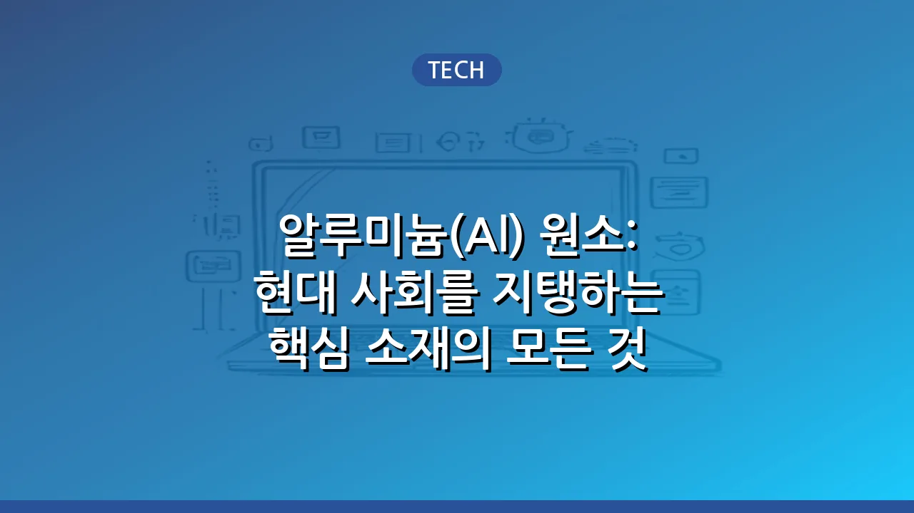

알루미늄(Al) 원소: 현대 사회를 지탱하는 핵심 소재의 모든 것
알루미늄(Al) 원소: 현대 사회를 지탱하는 핵심 소재의 모든 것
오늘날 우리 주변에서 쉽게 찾아볼 수 있는 금속 중 하나인 알루미늄(Al)은 건축물부터 스마트폰, 항공기에 이르기까지 다양한 분야에서 필수적인 역할을 수행하고 있습니다. 가벼우면서도 강하고, 뛰어난 내식성을 자랑하는 알루미늄은 20세기 산업 혁명을 이끈 주요 소재 중 하나로 평가받으며, 현대 사회의 발전에 지대한 영향을 미쳤습니다. 이 글에서는 알루미늄의 기본적인 특성부터 다양한 활용 분야, 그리고 지속 가능한 미래를 위한 재활용 가치까지 폭넓게 살펴보겠습니다.
알루미늄(Al)이란 무엇인가? 주요 특성 심층 분석
알루미늄(Aluminum, 원소기호 Al)은 주기율표 13족에 속하는 은백색의 비철금속입니다. 지구 지각에서 산소와 규소 다음으로 세 번째로 풍부한 원소이며, 금속 중에서는 가장 풍부하게 존재합니다. 이러한 풍부한 매장량은 알루미늄이 광범위하게 사용될 수 있는 기반을 제공합니다. 하지만 자연 상태에서는 순수한 형태로 발견되기 어렵고, 주로 보크사이트 광석에서 추출됩니다.
알루미늄의 핵심적인 물리적, 화학적 특성은 다음과 같습니다.
- 뛰어난 경량성: 철의 약 1/3에 불과한 가벼운 무게는 운송 수단(항공기, 자동차)의 연료 효율을 높이는 데 결정적인 역할을 합니다.
- 높은 강도: 순수 알루미늄은 부드럽지만, 구리, 마그네슘, 아연 등과 합금하면 강철에 버금가는 높은 강도를 가지게 됩니다.
- 우수한 내식성: 알루미늄 표면은 공기 중의 산소와 반응하여 산화알루미늄(Al₂O₃) 피막을 형성합니다. 이 매우 단단하고 안정적인 피막은 내부 금속이 추가적으로 부식되는 것을 효과적으로 막아줍니다.
- 높은 열 및 전기 전도성: 구리 다음으로 높은 전기 전도성을 가지고 있어 전선, 전자 부품 등에 활용됩니다. 또한 열 전도율도 높아 주방용품, 열교환기 등에 적합합니다.
- 비자성 및 비독성: 자성을 띠지 않아 전자 기기나 자기장에 민감한 환경에서 사용하기 좋으며, 인체에 무해하여 식품 포장재나 의료기기에도 널리 쓰입니다.
현대 산업에서의 알루미늄 활용 분야
알루미늄의 독특한 특성들은 다양한 산업 분야에서 혁신적인 솔루션을 제공합니다. 그 활용 범위는 우리의 상상을 초월할 정도로 넓습니다.
| 산업 분야 | 주요 활용 예시 | 알루미늄 특성 |
|---|---|---|
| 항공 및 우주 | 항공기 동체, 로켓 부품, 인공위성 | 경량성, 고강도(합금), 내식성 |
| 자동차 및 운송 | 자동차 차체, 휠, 선박, 기차 | 경량성(연료 효율 증대), 강도, 내식성 |
| 건축 및 건설 | 창문 프레임, 외벽 패널, 지붕재 | 경량성, 내식성, 가공성, 미관 |
| 전자 및 전기 | 전선, 방열판, 스마트폰/노트북 케이스 | 높은 전기/열 전도성, 경량성, 가공성 |
| 포장 및 용기 | 음료 캔, 식품 포일, 약품 포장재 | 경량성, 재활용성, 비독성, 차단성 |
| 주방 용품 | 냄비, 프라이팬, 각종 조리 도구 | 높은 열 전도성, 경량성, 내구성 |
이 외에도 스포츠 용품, 의료 기기, 가구 등 거의 모든 생활 분야에서 알루미늄은 그 가치를 인정받고 있습니다. 특히 경량화가 중요한 모빌리티 산업에서는 철강을 대체하는 핵심 소재로 더욱 주목받고 있습니다.
지속 가능한 미래를 위한 알루미늄의 친환경적 가치
알루미늄은 단순히 기능적 우수성만을 가진 소재가 아닙니다. 환경 보호 및 지속 가능성 측면에서도 매우 중요한 가치를 지닙니다. 알루미늄은 '영구적인 금속'이라고 불릴 정도로 무한히 재활용될 수 있는 특성을 가지고 있습니다.
새로운 알루미늄을 생산하는 데는 많은 에너지가 필요하지만, 재활용 알루미늄은 원광에서 추출하는 에너지의 5% 정도만으로도 동일한 품질의 제품을 만들 수 있습니다. 이는 에너지 소비를 획기적으로 줄이고, 탄소 배출량 감소에도 크게 기여합니다. 또한, 재활용 과정에서 알루미늄의 물리적, 화학적 특성이 저하되지 않기 때문에 그 가치를 계속해서 유지할 수 있습니다. 알루미늄 캔 하나를 재활용할 때 아낄 수 있는 에너지는 TV를 3시간 시청하거나, 전구를 몇 시간 동안 켤 수 있는 양과 비슷하다고 알려져 있습니다.
이러한 재활용성은 자원 고갈 문제 해결과 폐기물 감소에도 큰 도움을 주며, 순환 경제 구축에 핵심적인 역할을 합니다. 많은 국가와 기업들이 알루미늄 재활용률을 높이기 위한 노력을 기울이고 있으며, 이는 미래 세대를 위한 지속 가능한 발전에 기여하는 중요한 움직임입니다.
알루미늄에 대한 오해와 진실
알루미늄은 널리 사용되는 만큼, 때때로 오해를 받기도 합니다. 예를 들어, 알루미늄이 인체에 해로울 수 있다는 우려가 제기되기도 합니다. 하지만 현재까지 과학적으로 검증된 바로는, 일상적인 환경에서 식품이나 음료를 통해 섭취되는 알루미늄 양은 인체에 유해한 수준이 아닙니다. 세계보건기구(WHO)와 각국의 식품 안전 기관들은 알루미늄 조리 도구 및 포장재 사용에 대해 안전하다고 판단하고 있습니다. 다만, 특정 질환을 앓고 있거나 매우 민감한 경우 전문가와 상담이 필요할 수 있습니다.
또 다른 오해는 알루미늄이 녹슬지 않는다는 것입니다. 알루미늄은 녹슬지 않는 것이 아니라, 표면에 형성되는 산화 피막 덕분에 부식에 매우 강합니다. 이 피막이 손상되면 조건에 따라 부식이 진행될 수 있지만, 일반적인 환경에서는 철에 비해 훨씬 뛰어난 내식성을 보입니다.
결론: 알루미늄(Al)의 끊임없는 진화와 미래 가치
알루미늄(Al)은 가볍고 강하며 부식에 강할 뿐만 아니라, 탁월한 전기/열 전도성을 자랑하며 무한한 재활용성을 가진 경이로운 금속입니다. 건축, 운송, 전자, 포장 등 거의 모든 산업 분야에서 핵심 소재로 자리매김하며 현대 문명의 발전을 견인해왔습니다. 앞으로도 더욱 다양한 합금 개발과 가공 기술의 발전을 통해 알루미늄은 더욱 경량화되고, 고강도화되며, 친환경적인 방향으로 진화할 것입니다. 지속 가능한 사회를 위한 자원 순환의 중요성이 강조되는 시대에, 알루미늄의 가치는 더욱 빛을 발할 것으로 기대됩니다. 우리 생활과 산업 전반에 걸쳐 알루미늄이 가져올 미래의 혁신에 주목할 필요가 있습니다.
🔗 이 글도 함께 보면 좋아요: 티센크루프 마린 시스템: 글로벌 해양 방위 산업의 핵심
관련 추천 상품
알루미늄 호일, 알루미늄 냄비 세트 관련 인기 상품 보러가기
이 포스팅은 쿠팡 파트너스 활동의 일환으로, 이에 따른 일정액의 수수료를 제공받습니다.